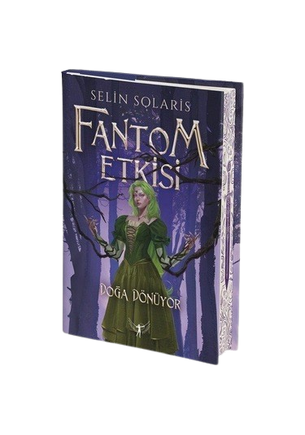

-

Fantom Etkisi- Ölümün Kalbi
1 Ekim 2024 / Artemis Yayınları
-

Raven'ın Peşinde
12 Mayıs 2025 / Martı Yayınları
-

Raven Suikastçısı
22 Ocak 2025 / Martı Yayınları
-

Fantom Etkisi - Doğa Dönüyor
5 Haziran 2024 / Artemis Yayınları